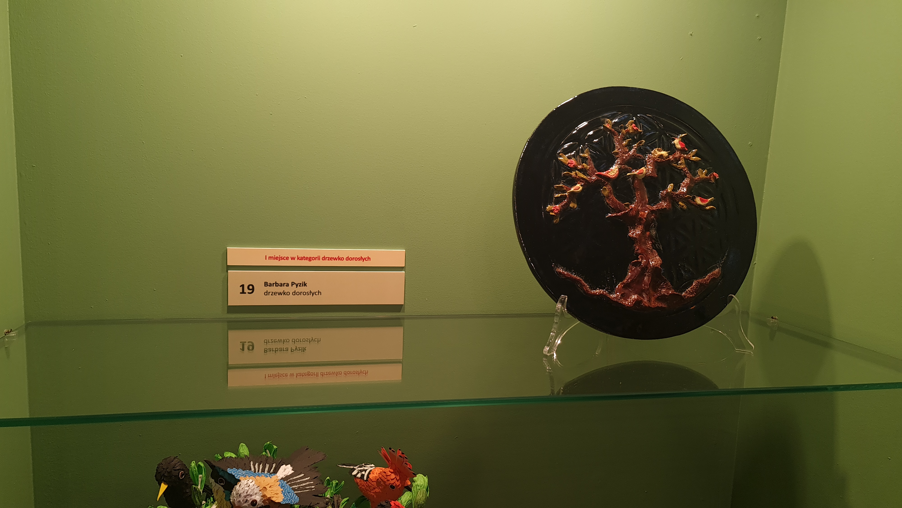

Zasady Konkursu
Drzewko emausowe nawiązuje do tradycyjnych drzewek życia,
które można było znaleźć na straganach. Składało się ono
z gniazda z figurkami piskląt lub figurki ptaka osadzonego
na ozdobionym listkami kiju i zwykle wykonane było z drewna.
Zabawka ta posiadała bogatą symbolikę związaną z dawnymi obrzędami
i zwyczajami mieszkańców podkrakowskich wsi, a tradycja wykonywania
tej ozdoby sięga swymi korzeniami czasów przedchrześcijańskich
, kiedy to wierzono, że dusze zmarłych powracają na ziemię pod
postacią ptaków i szukają schronienia w gałęziach drzew.
Drzewko
oznaczało również budzenie się przyrody do życia. Do tej symboliki
powinno nawiązywać zgłaszane na konkurs drzewko, wykonane w dowolnej
formie przestrzennej, dowolnej wielkości, za pomocą dowolnej techniki
oraz materiałów.
Jury oceniać będzie zgodność z symboliką drzewka życia
, ogólne wrażenie estetyczne, oryginalne ujęcie tematu, pomysłowość,
jakość wykonania, samodzielność oraz kompozycję
Kategorie Konkursu
drzewka dziecięce – wiek uczestnika do ukończenia 12 roku życia (od 1 do 3 współautorów, np. rodzeństwo, znajomi, z zastrzeżeniem że wszyscy twórcy muszą mieć poniżej 12 lat)
drzewka młodzieżowe –
wiek uczestnika od 12 lat do
ukończenia 18 lat (od 1 do 3 współautorów, np. rodzeństwo, znajomi, z zastrzeżeniem że
wszyscy twórcy muszą mieć od 12 do 18 lat)
drzewka dorosłych – wiek Uczestnika powyżej 18 lat (od 1 do 3 współautorów, np. rodzeństwo,
znajomi, z zastrzeżeniem że wszyscy twórcy muszą mieć powyżej 18 lat)
drzewka rodzinne i zespołowe/grupowe instytucjonalne dziecięce (rodzinne tzn. przynajmniej
jedna osoba poniżej 12 lat i przynajmniej jedna osoba powyżej 12 lat; zespołowe dziecięce tzn.
co najmniej 4 autorów poniżej 12 lat; grupowe instytucjonalne dziecięce tzn. co najmniej 4 autorów
poniżej 12 lat reprezentujących instytucję: szkołę, przedszkole, dom kultury itp.)
drzewka zespołowe/grupowe instytucjonalne (zespołowe tzn. co najmniej 4 autorów powyżej 12 lat;
grupowe instytucjonalne tzn. co najmniej 4 autorów powyżej 12 lat reprezentujących instytucję: s
zkołę, dom kultury, stowarzyszenie, dom pomocy itp.)
można spróbować swoich sił również w kategorii tradycyjne drzewko życia, bez kategorii wiekowej
i ilości autorów – kryteria w tej kategorii związane są z zastosowaną techniką i materiałem: p
owinno być rzeźbione w drewnie, malowane, z figurką ptaka na sprężynce.
Zwycięscy

I Miejsce w Kategori dzrewko dziecęce
Aleksander Dzudzik, Szymon Skorupa

I Miejsce w Kategori drzewko dorosłych
Robert Frasik

I Miejsce w Kategori drzewko dorosłych
Barbara Pyzik